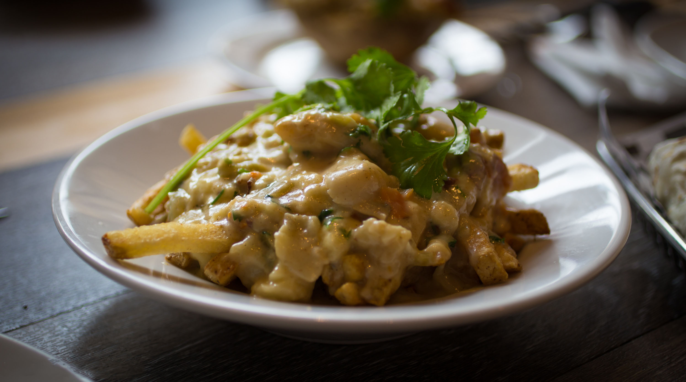

Traditional Poutine 10
Our Belgian style french fries, swimming in beefy, bovine gravy goodness and oozing squeaky-fresh melted cheese curds.
The best poutine this side of Niagra Falls…
We are currently
Open
until 9:00pm
| Phone | 215-555-1212 |
|---|---|
| info@gravyboat.com |
| Mon—Thu | 10 AM - 9 PM |
|---|---|
| Fri—Sat | 10 AM - 12 AM |
| Sun | 10 AM - 3 PM |